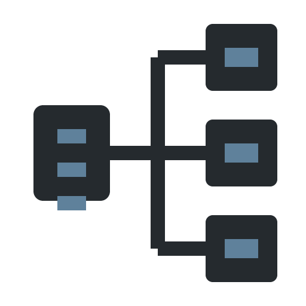
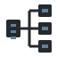

01 / DARK#1F1F1F
App icon / SVG master + PNG exports
32px clarity check

512256128
6432The master SVG inherits currentColor when inlined; set --hypr-accent: currentColor for mono.
Ambient blueprint
Surface grain / 128px tile
02 / LIGHT#FFFFFF
App icon / SVG master + PNG exports
32px clarity check
5122561286432
Graphite architecture, with the steel-blue mark used only as a signal.